Thèmes du TP :
Préambule- Pattern Décorateur
- Le chapitre
3 extrait de Head First Design Patterns O'Reilly
les exemples de ce livre : - Pattern Chaîne de responsabilités
- Pattern Singleton
- Décorer une classe "InputStream"
1) import de la librairie femtoContainer
- Téléchargez femtoContainer.jar
- Ajouter cette archive à votre projet tp8, Menu Outils,
item Préférences, onglet Bibliothèques
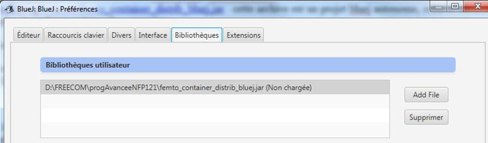 - Redémarrez BlueJ
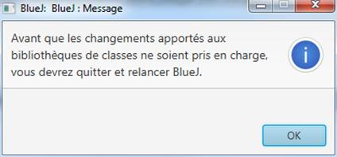 - Vérifiez à nouveau Menu Outils,
item Préférences, onglet Bibliothèques,
l'archive doit être chargée
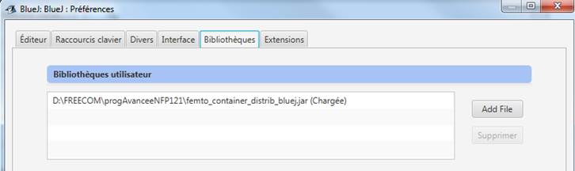
2) Exécutez la classe de tests unitaires, incluse dans le paquetage decorateurHtmlVuEnCours, celle-ci utilise l'outil femtoContainer pour la configuration du décorateur HTML.
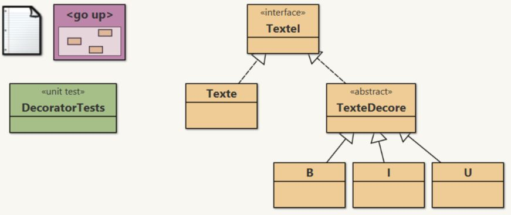
- 1) Vérifiez que cette classe de tests s'exécute sur votre
poste sans échec.
- 2) Puis ouvrez le document en haut à gauche (i.e. le fichier
README.TXT),
- supprimez le commentaire pour le mode verbeux, soit
- verbose=true au lieu de #verbose=true, relancez l'exécution
- Signalez sur le forum, dès que possible toute anomalie de fonctionnement de ce fabuleux outil.
- 1) Vérifiez que cette classe de tests s'exécute sur votre
poste sans échec.
- 2) Puis ouvrez le document en haut à gauche (i.e. le fichier
README.TXT),
- supprimez le commentaire pour le mode verbeux, soit
- verbose=true au lieu de #verbose=true, relancez l'exécution
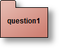 Une IHM à compléter : une PIZZA cela se décore !!!
Utilisation du pattern Décorateur pour
l'élaboration d'une pizza : Les pizzas, 3 sortes (Classic, PizzaSolo ou
GenerousCrust) sont ici "décorées" par des ingrédients avant d'être
confectionnées (MAKING Pizza) et le prix dépend bien sur de cette
composition. On "résume" cela par l'architecture suivante :
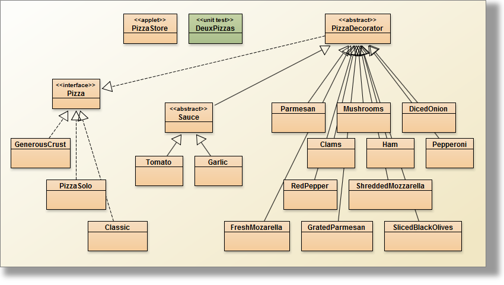
Alors, la création d'une pizza à pâte
"Classic" avec deux doses de Jambon ("Ham") et avec des champignons
("Mushrooms") sera "confectionnée" en Java par :
Pizza pizza = new Mushrooms(new Ham(new Ham( new Classic())); Complétez L'IHM "PizzaStore" qui
permet :
- d'élaborer une pizza à la demande, et
- de calculer son prix "en temps réel" au fur et à mesure des désirs de l'acheteur
Interface au comportement attendu, depuis votre répertoire tp8>java -jar ihm.jar
 Complétez cette architecture
Complétez cette architecture L'exemple présenté dans le chapitre 3 extrait de Head First Design Patterns,
décrit une boisson et
des compléments possibles. Le pattern décorateur est utilisé afin, de
"décorer" la boisson choisie avec les souhaits d'un client d'une part,
et de fournir au client le prix exact de la boisson qu'il a commandée
d'autre part.
Exemple : un café corsé avec du lait, s'écrit:
Exemple : un café corsé avec du lait, s'écrit:
Beverage darkRoastWithMilk = new Milk(new DarkRoast()); et l'obtention de son prix :
double price = darkRoastWithMilk.cost();
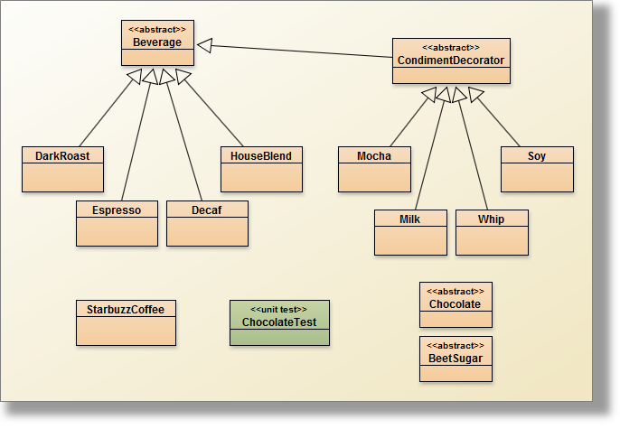
Les différentes boissons héritent de la classe
abstraite Beverage,
La classe abstraite CondimentDecorator, instance du pattern Décorateur, représente les exigences possibles du client...
On demande de compléter cette architecture en ajoutant le chocolat (classe Chocolate) comme boisson, le coût de cette boisson est de 2.10 et de compléter toutes les méthodes de la classe de test ChocolateTest, les méthodes correspondent aux boissons suivantes:
La classe abstraite CondimentDecorator, instance du pattern Décorateur, représente les exigences possibles du client...
On demande de compléter cette architecture en ajoutant le chocolat (classe Chocolate) comme boisson, le coût de cette boisson est de 2.10 et de compléter toutes les méthodes de la classe de test ChocolateTest, les méthodes correspondent aux boissons suivantes:
- un chocolat seul
- un chocolat avec de la crème(Whip)
- un chocolat avec deux rations de crème
- un chocolat avec de la crème, du soja(soy) et du moka(mocha),... ( les goûts ne se discutent pas ...)
- un café décaféiné avec du lait
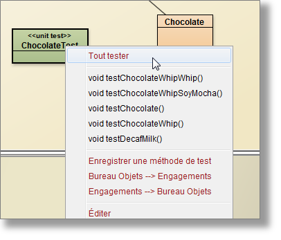 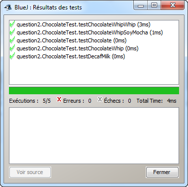
 Le condiment sucre de betteraves (classe BeetSugar)
Le condiment sucre de betteraves (classe BeetSugar)
Ajouter le condiment sucre de
betteraves, (classe BeetSugar), dont le coût est de 0.1, sa
description : "Beet Sugar".
Attention à l'espace entre Beet et Sugar.
Attention à l'espace entre Beet et Sugar.
 La méthode toString()
La méthode toString() Ajouter la méthode public String
toString(); qui se contente de retourner la description et le
coût du produit choisi par le client, selon ce format description
$cost
un exemple : une trace de la description attendue
un exemple : une trace de la description attendue
Beverage b = new BeetSugar(new Whip(new Mocha(new Soy(new HouseBlend()))));
System.out.println(b); Trace attendue
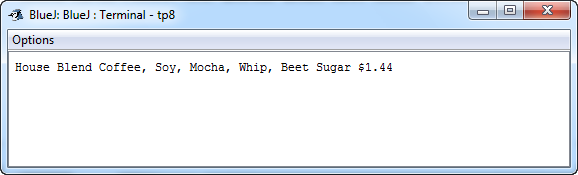
 I/O JAVA et pattern décorateur
I/O JAVA et pattern décorateur
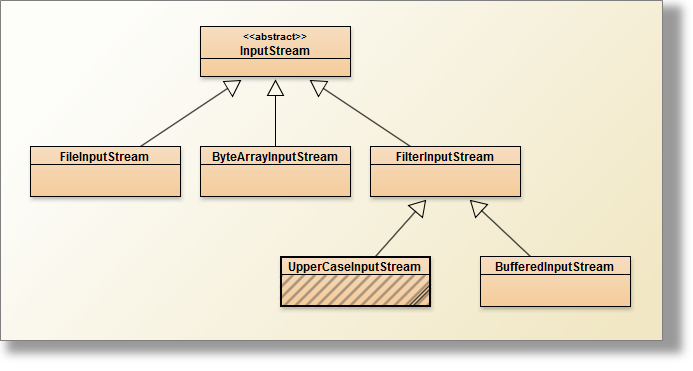
 Ci-dessus le décorateur (incomplet) des
entrées-sorties en Java, package java.io + la classe UpperCaseInputStream
à développer
Ci-dessus le décorateur (incomplet) des
entrées-sorties en Java, package java.io + la classe UpperCaseInputStream
à développerProposez la classe UpperCaseInputStream (en grisé ci dessus), un des décorateurs possibles de FilterInputStream, qui transforme en Majuscule tous les caractères du fichier transmis en paramètre.
public void testUpperCase_README_TXT() throws Exception {
InputStream is = new BufferedInputStream(new FileInputStream(new File("README.TXT"))); // déclaration à décorer
int c = is.read();
while (c != -1) {
assertTrue("erreur !, '" + Character.valueOf((char) c) + "' ne semble pas être une majuscule ...",
Character.isUpperCase((char) c) || (char) c == ' ');
c = is.read();
}
is.close();
}
 La classe PushbackInputStream
La classe PushbackInputStream Créez une instance de la classe
UpperCaseInputStream enrichie des fonctionnalités offertes par la
classe PushbackInputStream
Vérifiez en proposant un test supplémentaire de la de test UpperCaseInputStreamTest, le bon fonctionnement de cette instance ainsi décorée....
Vérifiez en proposant un test supplémentaire de la de test UpperCaseInputStreamTest, le bon fonctionnement de cette instance ainsi décorée....